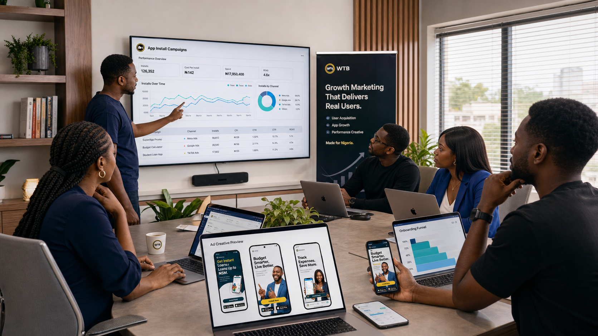

If you vibe-coded an app and now need users, the problem is usually not that the app exists. The problem is that the market still does not clearly understand why it should care, trust, install, return, and tell somebody else.
The practical sequence is discover the strongest use case, publish value-led organic videos, test real UGC, then use the winning creative in paid acquisition. WTB can support the wider app marketing system and mobile app user acquisition work.
Welcome to the new founder bottleneck
The build side of software is moving much faster now. As of June 2026, major AI coding platforms are attracting billions in investment and helping more non-technical and semi-technical builders ship products faster than before. That is exciting, but it also creates a new problem: when more people can build, more people now compete for the same attention.
In other words, the app store is not waiting by the window for your app like a faithful lover. It is crowded. It is noisy. And frankly, it does not care that your app was hard to build, even if it was built with AI and sheer stubbornness.
That is why distribution has become the real game.
The app is built. The market is still unconvinced.
This is where many vibe-coded products fall into the same trap. The founder builds quickly, launches proudly, posts a neat screenshot, maybe writes “now live” on X or LinkedIn, and then waits for magic. But users do not download tools because the founder is excited. They download tools because the value is obvious, the problem feels real, and the product looks like it fits into their life without drama.
That means your job after launch is not to scream louder. It is to explain better.
What Apple and Google quietly keep telling founders
Apple's official guidance on App Store product pages makes something very clear: your product page needs to do real persuasion work. Screenshots, app previews, descriptions, and product page messaging all shape whether people understand the app fast enough to care. Google says something similar through App campaigns: growth comes from connecting creative assets, clear objectives, and enough signal to learn what works.
So no, the app is not “marketed” because it is listed. Being listed is not distribution. It is simply being available. There is a painful difference.
The real distribution plan for a vibe-coded app
This is the practical system we recommend for founders who already have something working and now need real market traction.
Phase 1: Create 10 organic videos that sell the transformation, not just the feature list
Most founders explain their app like builders. Users need to hear it like beneficiaries.
That means your first batch of content should not just say what the app does. It should show what becomes easier, faster, safer, cheaper, less stressful, or more fun because the app exists.
Your first 10 organic videos should cover things like:
- the painful before-state
- the faster after-state
- specific use cases
- common mistakes your app helps people avoid
- tiny product demos that feel useful, not self-congratulatory
- founder story moments that make the problem feel human
Think TikTok, Instagram Reels, YouTube Shorts, and even X clips if the audience fits. The goal here is not “posting content.” The goal is market education with emotional clarity.
Phase 2: Create 10 UGC creator videos so the app stops sounding like only you believe in it
This is where many app founders miss a huge opportunity. People often trust products more when they see them through the eyes of a user, not just the mouth of the maker.
That is why we recommend working with around 10 UGC creators or micro-influencers who can interpret the app from a user point of view. Not all of them need to have giant audiences. In fact, relatability often outperforms glamour here.
The creator content should answer questions like:
- What was frustrating before this app?
- What did using it make easier?
- Why would a normal person keep this on their phone?
- What part of the experience feels surprisingly useful?
This matters because people do not just buy apps. They buy imagined relief.
Phase 3: Turn the best organic and UGC winners into ad creative
Once the content starts running, do not guess what to scale. Let the market vote first.
The best-performing organic video and the best-performing UGC video become your next ad assets. Then you iterate. You create variations. You sharpen the first three seconds. You test hooks, headlines, thumbnails, captions, and CTA angles.
This is where your app stops “trying marketing” and starts building a real paid acquisition engine.
The sequence looks like this:
- publish organic videos consistently on the brand profile
- publish creator-style UGC on the brand profile and creator pages where useful
- watch for hold rate, saves, comments, shares, installs, and click intent
- turn the strongest performers into paid ads
- make better versions of what already proved itself

But distribution is not just content and ads
Here is the part founders often skip because it feels less glamorous: if the app store page is weak and the onboarding is clumsy, content alone will not save you.
If the app page screenshots are generic, if the copy does not explain the value quickly, or if the onboarding experience makes first-time users feel like they accidentally enrolled in a bureaucratic ritual, your acquisition cost will suffer.
That is why the best growth systems usually connect four things together:
- message clarity so the app sounds useful
- content distribution so the market sees it often enough
- creator proof so it feels believable
- onboarding quality so installs can turn into actual users
Why vibe-coded founders are especially vulnerable here
Because speed can create a beautiful illusion. If the app appeared faster than expected, the founder may assume growth can appear the same way. But software velocity and market trust are not twins. They are cousins at best.
Recent research on vibe coding also points to a wider experience gap: more people can now produce software, but not everyone has the same instincts for verification, market packaging, onboarding, retention, or go-to-market discipline. That gap is exactly where many promising products start leaking momentum.
So the danger is not that the founder used AI. The danger is that the founder mistakes building for distribution.
What a strong first 30 days should look like
If your app is already live, here is a more useful first-30-day focus:
- tighten your app store copy and screenshots
- write 10 short-form video hooks around pain, outcome, and use case
- brief 10 UGC creators around user transformation, not feature recital
- post consistently on the app profile, not only on your personal page
- watch which creative people actually engage with
- promote the proven winners with paid ads
- fix any onboarding friction before increasing budget aggressively
This is not magic. It is simply a cleaner relationship between content, proof, distribution, and conversion.
Where WTB fits in
This is exactly where WTB can help. We work best when a founder already has something real and now needs the market to understand it faster. That can mean content strategy, UGC planning, app launch messaging, ad creative direction, app-store improvement, onboarding support, and the broader growth system that connects those parts together.
The point is not to make your app look busy. The point is to make your app easier to choose.
Sources behind this article
This article draws on current reporting and official platform guidance, including Business Insider's June 17, 2026 report on the vibe-coding boom, Apple's guide to creating App Store product pages, Google's guide to App campaigns, and the May 2026 study From Prompting to Verification: How Experience Shapes Vibe Coding Practices.
FAQ
What is the biggest mistake founders make after building an app with AI?
The biggest mistake is assuming the product will spread by itself. Most founders build the app, publish it, post once or twice, then wonder why nobody shows up.
What should a founder do first after launching a new app?
Start with message clarity, app-store page quality, value-driven organic content, user-style creator content, and only then scale the best-performing creative into ads.
Can UGC really help an app grow?
Yes. UGC can make the app feel more believable because people get to see the product through a user lens instead of only through polished founder messaging.
Built the app and now need actual traction?
If your business needs help with app launch messaging, creator strategy, user acquisition, app marketing, or the full content-to-ads system, start with our contact page, review our App Marketing Agency Nigeria page, or book a strategy call.
For the next decision, compare our guide to why AI-built apps struggle to get users with the mobile app user-acquisition service so your launch plan covers both attention and retention.